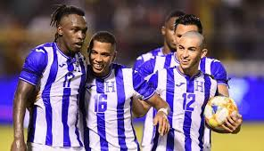

Representa a Tu país, como lo haría un verdadero Catracho

¿Qué buscamos en un Jugador?
Si Eres uno de estos tipos de jugadores, Estas invitado a ser parte de nuestro Proyecto:
Tipos de Jugadores
Jugadores de Fútbol base:
Si eres un jugador de fútbol base, que no estás en los clubes más importantes del país y en la división máxima del fútbol base, para tener una oportunidad, que te siga un agente, te valore, te puntúe, te realice informes, vídeos, etcétera... pues tendrás que hablar con tus padres, y hablarles de estas opciones:
Seguimiento profesional de Proceso,
Academia de fútbol Local.
Si eres un jugador de fúbol base que estás en clubes de élite, en la máxima división, (ejemplo Barça o Real Madrid, juvenil división de honor), seguramente ya tendrás agente. Si por lo que fuera no lo tuvieras o has roto con el que tienes, o es un familiar quién te ha gestionado hasta ahora, y lo que buscas es una agencia de fútbol intermediaria que te ayude en temas contractuales, negociaciones, temas jurídicos, normativos, progresar en otras ligas de otros paises, entonces te propondremos un contrato de promoción o de representación exclusiva sin coste ninguno.
Jugador de fútbol amateur (división regional o preferente)
Si estás convencido que puedes llegar más alto, que tienes potencial para crecer, y quieres invertir en ti, nosotros somos tu mejor opción para crecer futbolisticamente hablando
Jugador de fútbol 3a división, 2b, 2a o 1a división
El ya estar en una liga mayor, te asegura más un espacio entre nosotros, puesto que nos facilita la supervisón y dá mucho que decir de ti al momento de observarte.